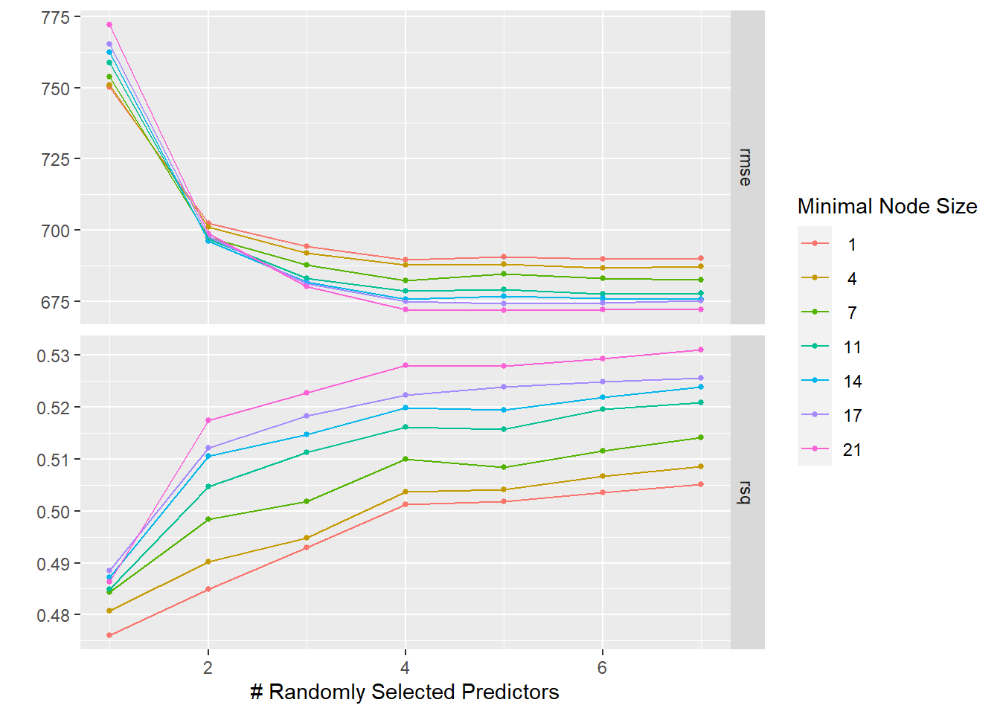

Data on a drug candidate called Mavoglurant is available in this GitHub repository. First, let’s further process the dataset from the “Fitting Exercise” to make it ready for model building.
#Load the required packageslibrary(dplyr)
Warning: package 'dplyr' was built under R version 4.3.2
Attaching package: 'dplyr'
The following objects are masked from 'package:stats':
filter, lag
The following objects are masked from 'package:base':
intersect, setdiff, setequal, union
library(tidymodels)
Warning: package 'tidymodels' was built under R version 4.3.2
Warning: package 'dials' was built under R version 4.3.2
Warning: package 'ggplot2' was built under R version 4.3.2
Warning: package 'infer' was built under R version 4.3.2
Warning: package 'modeldata' was built under R version 4.3.2
Warning: package 'parsnip' was built under R version 4.3.2
Warning: package 'purrr' was built under R version 4.3.2
Warning: package 'recipes' was built under R version 4.3.2
Warning: package 'rsample' was built under R version 4.3.2
Warning: package 'tune' was built under R version 4.3.2
Warning: package 'workflows' was built under R version 4.3.2
Warning: package 'workflowsets' was built under R version 4.3.2
Warning: package 'yardstick' was built under R version 4.3.2
── Conflicts ───────────────────────────────────────── tidymodels_conflicts() ──
✖ purrr::discard() masks scales::discard()
✖ dplyr::filter() masks stats::filter()
✖ dplyr::lag() masks stats::lag()
✖ recipes::step() masks stats::step()
• Dig deeper into tidy modeling with R at https://www.tmwr.org
library(ggplot2)library(corrplot)
corrplot 0.92 loaded
library(glmnet)
Warning: package 'glmnet' was built under R version 4.3.3
Loading required package: Matrix
Attaching package: 'Matrix'
The following objects are masked from 'package:tidyr':
expand, pack, unpack
Loaded glmnet 4.1-8
library(ranger)
Warning: package 'ranger' was built under R version 4.3.2
#Set a seedrngseed =1234set.seed(rngseed)#Load the datamavoglurant <-readRDS("mavoglurant_processed.rds")#Get an overview and summary of the datastr(mavoglurant)
Y DOSE RATE AGE SEX
Min. : 826.4 Min. :25.00 Min. : 75.0 Min. :18.00 1:104
1st Qu.:1700.5 1st Qu.:25.00 1st Qu.:150.0 1st Qu.:26.00 2: 16
Median :2349.1 Median :37.50 Median :225.0 Median :31.00
Mean :2445.4 Mean :36.46 Mean :218.1 Mean :33.00
3rd Qu.:3050.2 3rd Qu.:50.00 3rd Qu.:300.0 3rd Qu.:40.25
Max. :5606.6 Max. :50.00 Max. :300.0 Max. :50.00
RACE WT HT
1 :74 Min. : 56.60 Min. :1.520
2 :36 1st Qu.: 73.17 1st Qu.:1.700
7 : 2 Median : 82.10 Median :1.770
88: 8 Mean : 82.55 Mean :1.759
3rd Qu.: 90.10 3rd Qu.:1.813
Max. :115.30 Max. :1.930
#Convert the SEX variable to numericmavoglurant$SEX <-as.numeric(mavoglurant$SEX)#Drop the RATE variablemavoglurant <- mavoglurant %>%select(-RATE)#Combine the "7" and "88" categories in the RACE variable into a single category called "3"mavoglurant <- mavoglurant %>%mutate(RACE =ifelse(RACE %in%c(7, 88), 3, RACE))
Next let’s make a pairwise correlation plot for the continuous variables.
#Create a subset dataset with only continuous variablescontinuous <- mavoglurant %>%select(Y, AGE, WT, HT)#Create a correlation matrixcorrmatrix <-cor(continuous)#Create a correlation plotcorrplot(corrmatrix, method ="number")
The correlation plot shows that none of the pairwise correlations is excessive (i.e., above an absolute value of 0.9). We shouldn’t have much of a problem with collinearity.
Now let’s add a new variable BMI, computed from the HT and WT variables.
#Create a new variable BMI from HT and WTmavoglurant$BMI <- mavoglurant$WT / (mavoglurant$HT)^2
We’re done with data processing and exploration, and we’re ready to fit some models.
Part 2 - Build the Models
Let’s explore three models: linear regression with all predictors, LASSO regression, and random forest. First, let’s look at the linear regression model.
# A tibble: 3 × 3
.metric .estimator .estimate
<chr> <chr> <dbl>
1 rmse standard 581.
2 rsq standard 0.631
3 mae standard 456.
##Plot observed vs. predicted valuesggplot(predictions_linear, aes(x = observed, y = predicted)) +geom_point() +geom_abline(intercept =0, slope =1, linetype ="dashed", color ="black") +xlim(0, 5000) +ylim(0, 5000) +labs(x ="Observed Values", y ="Predicted Values", title ="Observed vs. Predicted Values for the Linear Regression Model") +theme_minimal()
# A tibble: 3 × 3
.metric .estimator .estimate
<chr> <chr> <dbl>
1 rmse standard 362.
2 rsq standard 0.901
3 mae standard 282.
##Plot observed vs. predicted valuesggplot(predictions_rf, aes(x = observed, y = predicted)) +geom_point() +geom_abline(intercept =0, slope =1, linetype ="dashed", color ="black") +xlim(0, 5000) +ylim(0, 5000) +labs(x ="Observed Values", y ="Predicted Values", title ="Observed vs. Predicted Values for the Random Forest Model") +theme_minimal()
Comparing the RMSE values for the three models, Model 3 with the random forest model (RMSE = 361.66) performs better than Model 1 with linear regression (RMSE = 581.42) and Model 2 with LASSO regression (RMSE = 581.47). The RMSE values and observed versus predicted plots for Model 1 and Model 2 are almost the same results. The Model 3 plot shows that the predictions are overall closer to the observations for the random forest model. Although they easily overfit, random forest models are very flexible and can capture many of the patterns seen in the data.
Let’s try tuning the LASSO and random forest models.
Part 3 - Tune the Models
First let’s tune the LASSO model.
#Define the workflowlasso_recipe <-recipe(Y ~ ., data = mavoglurant)lasso_spec <-linear_reg(penalty =tune()) %>%set_engine("glmnet")wflow2 <-workflow() %>%add_recipe(lasso_recipe) %>%add_model(lasso_spec)#Define the penalty gridpenalty_grid <-tibble(penalty =10^seq(-5, 2, length.out =50))#Tune the modeltuned_lasso <-tune_grid(wflow2,resamples =apparent(mavoglurant),grid = penalty_grid)#Look at tuning diagnosticsautoplot(tuned_lasso)
The plot shows what happened during the tuning process for the LASSO model. RMSE is a function of the penalty parameter. The LASSO model does best (lowest RMSE value) for low penalty values, and the RMSE value increases as the amount of regularization (penalty parameter) increases. At the lowest penalty, the RMSE value is the same as for the linear model (RMSE = 581). When the penalty parameter is set to its lowest value, the LASSO model essentially becomes equivalent to ordinary linear regression because it does not impose any penalties on the coefficients. As the penalty parameter increases in LASSO tuning, the model becomes simpler, more coefficients are shrunk to zero, and the RMSE generally increases.
Then let’s tune the random forest model.
#Define the workflowrf_recipe <-recipe(Y ~ ., data = mavoglurant)rf_spec <-rand_forest(mode ="regression", mtry =tune(), min_n =tune(), trees =300) %>%set_engine("ranger", seed = rngseed)wflow3 <-workflow() %>%add_recipe(rf_recipe) %>%add_model(rf_spec)#Define the tuning gridtuning_grid <-grid_regular(mtry(range =c(1, 7)),min_n(range =c(1, 21)),levels =7)#Tune the modeltuned_rf <-tune_grid(wflow3,resamples =apparent(mavoglurant),grid = tuning_grid)#Look at tuning diagnosticsautoplot(tuned_rf)
The plot shows how RMSE changes as the tuning parameters change. The best results (lowest RMSE values) are for higher values of randomly selected predictors (mtry) and lower values of minimal node size (min_n).
Now let’s do proper tuning by using 5-fold cross-validation repeated 5 times to evaluate model performance during the tuning process. Let’s start with the LASSO model.
#Tune the model with cross-validationtuned_lasso_cv <-tune_grid(wflow2,resamples =vfold_cv(mavoglurant, v =5, repeats =5),grid = penalty_grid)#Look at tuning diagnosticsautoplot(tuned_lasso_cv)
The plot for the LASSO model tuned with cross-validation shows that the LASSO model does best (lowest RMSE value) for low penalty values, and the RMSE value increases as the amount of regularization (penalty parameter) increases.
Finally, let’s tune the random forest model with cross-validation.
#Tune the model with cross-validationtuned_rf_cv <-tune_grid(wflow3,resamples =vfold_cv(mavoglurant, v =5, repeats =5),grid = tuning_grid)#Look at tuning diagnosticsautoplot(tuned_rf_cv)

The plot for the random forest model tuned with cross-validation shows that the best results (lowest RMSE values) are for higher values of randomly selected predictors (mtry) and lower values of minimal node size (min_n). Compared to the random forest model, the RMSE values are lower for the LASSO model. LASSO regularization helps to mitigate overfitting by penalizing model complexity. Random forests can still be sensitive to noisy data or when the number of trees in the forest is too high. We conclude that the LASSO model performs better.